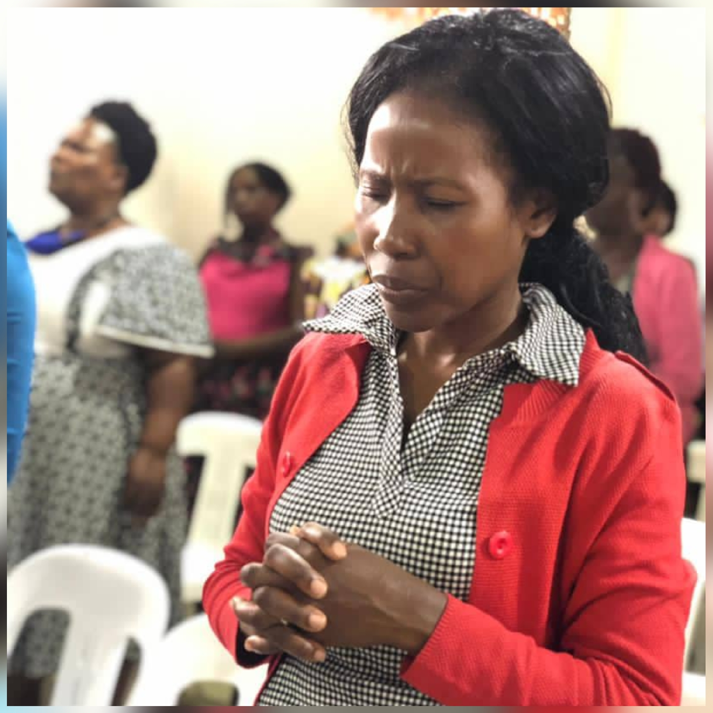
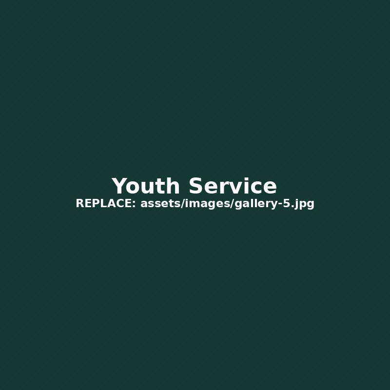
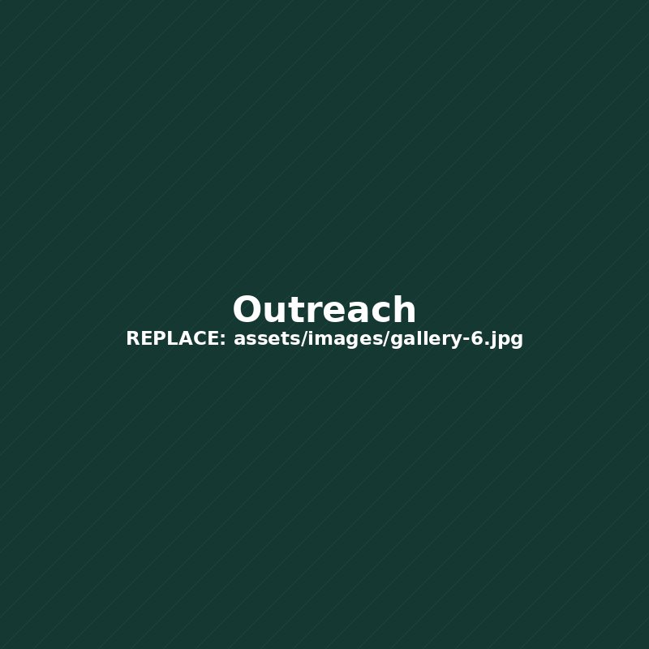
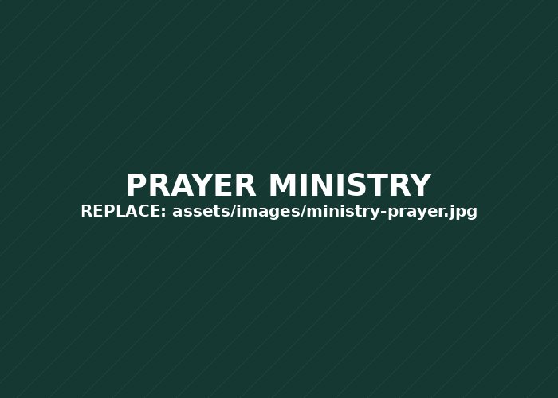

Worship That Lifts
Enter God's presence through heartfelt worship, prayer and praise.
WELCOME TO HEALING TABERNACLE
We are a Christ-centered church family in Uganda, committed to the Gospel, prayer, healing, worship and practical discipleship. Wherever you are in your journey, there is a place for you here.

A WORD FROM OUR PASTOR
We are a family of believers committed to the Gospel, prayer, healing and practical discipleship. Our desire is to help people know Christ, grow in the Word and live with faith, purpose and hope.
“Healing is not just our name — it is our mission.”
Discover Our Story →START WITH THE WORD
A Scripture and short encouragement to strengthen your day.
WHY VISIT US
Every gathering is designed to help you encounter God, connect with people and leave strengthened.
Enter God's presence through heartfelt worship, prayer and praise.
Receive prayer and encouragement for your life, family and purpose.
Build genuine relationships and grow with a family of believers.
STAY CONNECTED
Keep up with services, special gatherings and church activities.

SUNDAYJoin us for worship, the Word and fellowship.
View Events →
YOUTHA focused time to build faith, purpose and community.
Explore Youth →
OUTREACHPractical love, prayer and service beyond our walls.
See Outreach →“He heals the brokenhearted and binds up their wounds.”
Psalm 147:3CATCH UP
Stay rooted in the Word wherever you are.
FIND YOUR PLACE
Discover spaces to serve, learn, connect and grow.
Faith, friendship and purpose for the next generation.
Learn More →Use your gifts to help people encounter God.
Learn More →
Stand with others in prayer, faith and encouragement.
Request Prayer →PARTNER WITH US
Your generosity helps us reach families, support outreach and keep ministry moving.
Give Online →CHANGED LIVES
Read testimonies of faith, breakthrough and God's goodness.
Read Testimonies →FIRST TIME?
Find service information and everything you need for your first Sunday.
Plan Your Visit →OUR FAMILY
Connect with our growing church family and discover opportunities to participate.
WHAT GOD HAS DONE
Real stories from our church family.
NEED PRAYER?
Your prayer request can be submitted securely to the church prayer team.
Submit Prayer Request →